|
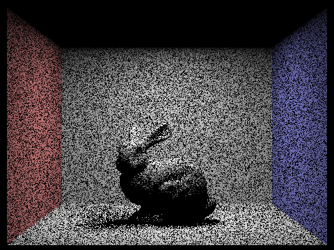
|
|

|
|
For this project, we implemented a pathtracing algorithm that allows us to render images using the core routines of a physically-based render, which simulates light materials in a 3D space and outputs realistic images. To generate such realistics results, we implemented ray generation and scene intersection, a Bounding Volume Hierarchy acceleration structure, direct and global illumination, and adaptive sampling.
To generate camera rays, we must complete the raytrace_pixel function which generates
ns_aa rays and computes the average spectrum that corresponds to the integral of the
irradiance of a given pixel. We first offset the pixel space coordinates by a randomly sampled point in [0,1]^2
and then scale down to [0,1]^2 coordinates by dividing by the width and height of the sampleBuffer.
If there is only one ray, i.e. ns_aa = 1, we offset by (0.5, 0.5) to give us the center pixel.
Once we have offsetted and scaled, we cast a ray using camera->generate_ray and accumulate
its radiance. Finally, we divided all the spectrums by the number of samples, ns_aa, to get the average
spectrum.
After casting rays, we will still render out a black screen. That is because although we are simulating our light
rays, we are not determining if it actually hits a primitive object. This is the work of the Triangle::intersect()
method which will determine if we hit any triangles. Here we use the fast ray-triangle intersection algorithm, the
Möller-Trumbore algorithm, that uses barycentric coordinates to compute the intersection point. Given a ray and the three points
of a triangle, we can use the Möller-Trumbore algorithm shown below to get the ray's t-value at the
hit point and the barycentric coordinates b1 and b2. To get the final barycentric coordinate,
we compute 1-b1-b2.
An intersection is determined if all three barycentric coordinates are within [0,1] and if t is within the ray's
valid range of t values. We then update ray's max_t = t to keep track of the closest
intersection and to save us time by disregarding intersections with primitives further away from the camera.
Then we populate isect, and now we can render triangles! Here is an empty Cornell Box:
There are spheres in this scene, but they do not show up because we have only tested for intersections with triangles. Now
we will implement Sphere::intersect() in a similar approach to Triangle::intersect(). The main
difference is that we use the quadratic formula:
where a, b, and c are:
There are three cases we must keep track of to determine if there is an intersection. Given the computed t values,
if (1) both are positive, it is a valid intersection. If (2) one is positive and the other is negative, it is also
a valid intersection. If (3) both are negative, the ray is considered to miss the sphere, and we mark this as not a
valid intersection. Like Triangle::intersect(), we update ray's max_t and populate isect.
Now we can render spheres!
Here are the normal shading for the bunny and coil scenes:
| 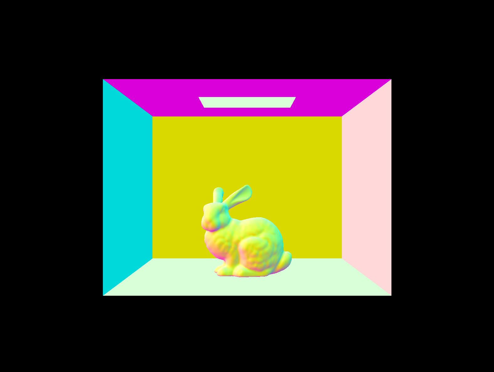 | 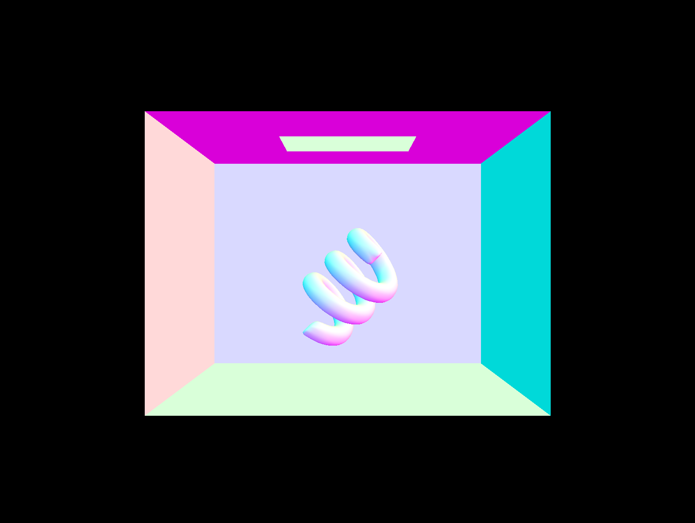 |
The bunny and coil scenes took quite some time to render, which means scenes with even more complicated
geometry like dae/meshedit/maxplanck.dae and dae/sky/CBlucy.dae will take forever. However, we can be more
efficient by constructing a Bounding Volume Hierarchy (BVH).
We begin by calculating the bounding box for each primitive and initializing a BVHNode for
that bounding box. In this recursive function, we set the base case to be if the number of primitives is less than
max_leaf_size, we store these primitives in the node. Otherwise, we split the primitives into two lists,
a left and a right list. The split point was determined by the midpoint of bounding box's largest axis dimension. If
the primitive's centroid's point on the same axis is less than the split point, it is allocated to the left. Otherwise, it will be pushed
to the right. After we separate the primitives, we have a special case to check if either list is empty to prevent
infinite recursion. If either list happens to be empty, we take the latest primitive added to the list and move it to
the empty list. Then we assign the node's left and right children to be a recursive call to construct_bvh()
with the respective primitive lists passed in.
The BVH visualization mode was very helpful to determine if my implementation was correct. Here are some of the steps
of the BVH construction from the overall bounding box all the way down to a leaf node:
| 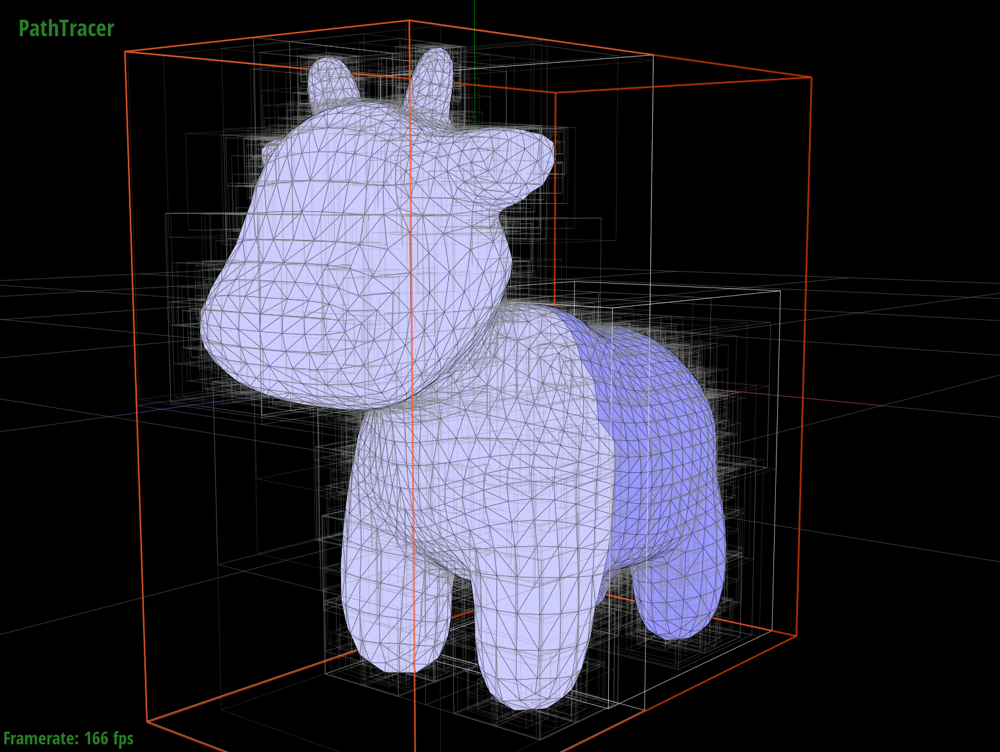 | 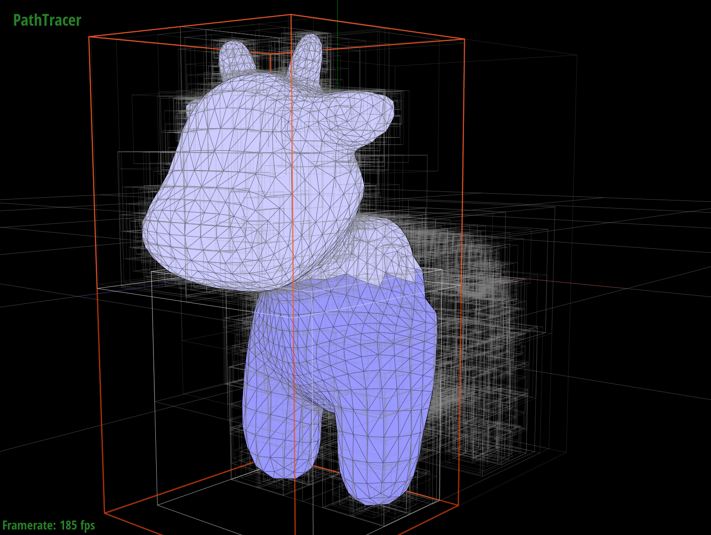 |
| 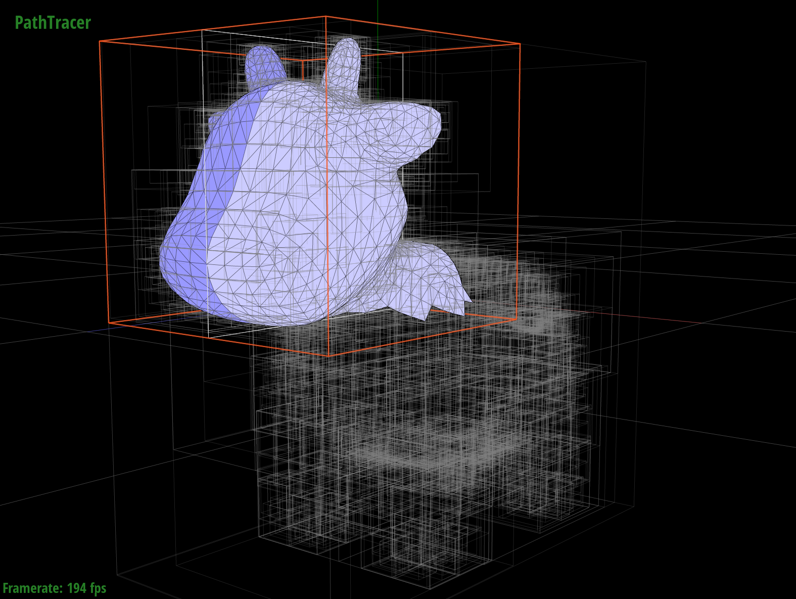 | 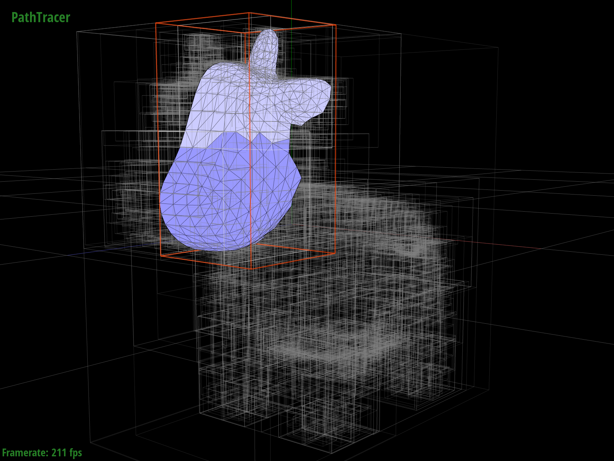 |
| 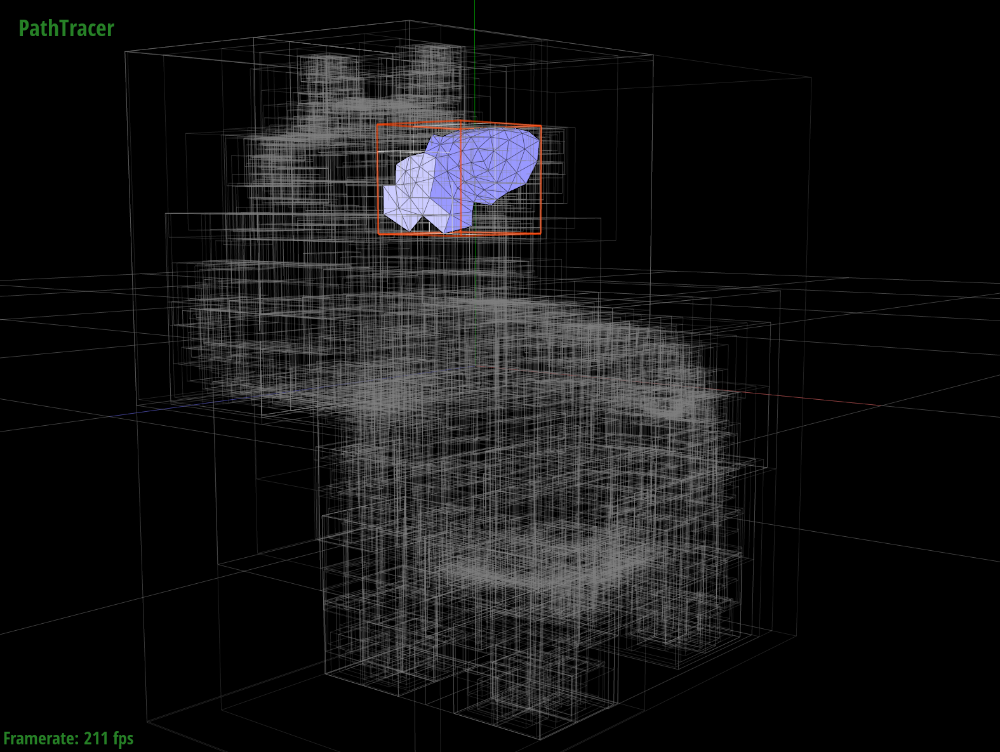 | 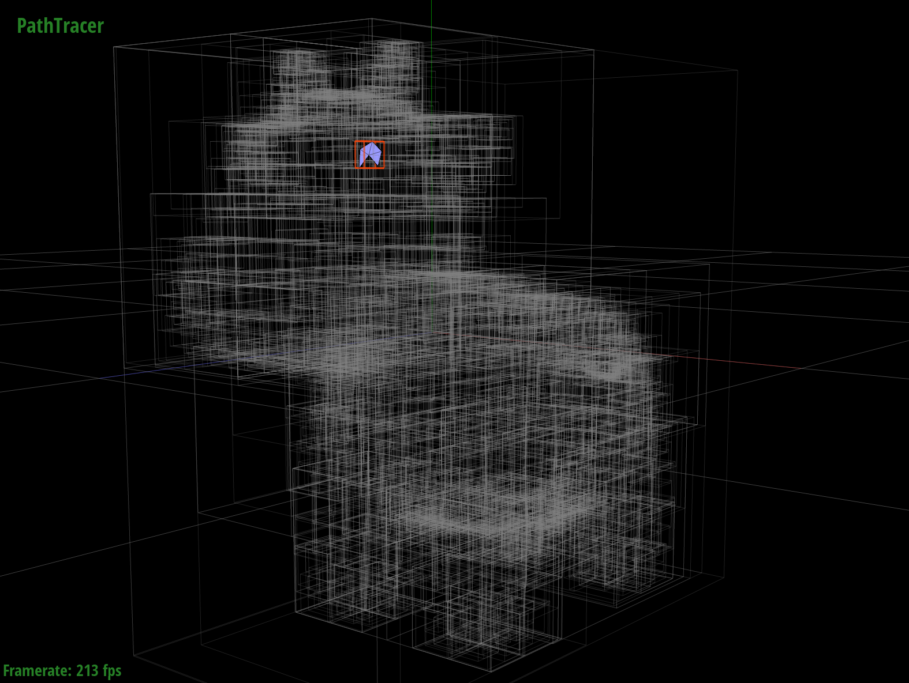 |
BBoxTo see if a ray intersects the bbox, we use the ray and axis-aligned-plane intersection equation and the ray and axis-aligned-box intersection method as described in lecture. Since the planes are perpendicular to their respective axes, the ray and axis-aligned-plane intersection equation simplies to:
which can then be extending to the y- and z- axes as well. Given this simplified equation, we can compute the values
where the ray intersects the box planes. We compute the tmin and tmax values for each axis and we update
t0 to be the max{tminx,tminy,tminz} and t1 to be min{tmaxx,tmaxy,tmaxz}. We can have early termination,
i.e. the ray misses the bounding box, if (1) (tminx > tmaxy || tmaxx < tminy), (2)
(max{tminx,tminy} > tmaxz || tminz > min{tminx,tminy}), or (t0 > r.max_t or t1 < r.min_t).
BVHAccel
Our BVH construction and BBox intersection methods will now be used to implement BVHAccel::intersect() which
determines if there is a valid intersection between the given ray and a primitive inside the provided BVHNode. First, we
check if the ray intersects the BBox. If this is not true, we can shortcircuit and return false. This saves us a lot of time when
rendering as we do not have to check the entire 3D space if there is a hit, which is why the BVH is so crucial. Otherwise,
we recurse all the way down the BVH -- making sure to check if the ray intersects the current BBox -- until we hit the leaf
node where the primitives are stored. Once we reach the leaf node, we check if the ray intersects any of the primitives and return
true if it does. I did not have to worry about populating isect or keeping track of the closest intersection in this
function in this method because both tasks were already handled in my Triangle and Sphere intersect() functions.
Now we can render the more complicated geometry in a matter of seconds!
|
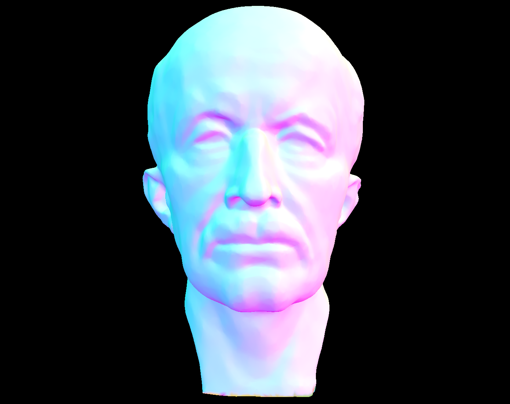
|
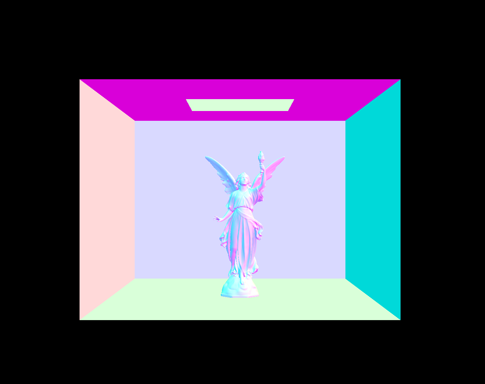
|
While Max and Lucy were too high-poly to test with and without the BVH, I was able to perform some speed experiments on the more mild geometry scenes dae/meshedit/cow.dae and dae/sky/CBcoil.dae. Without the BVH construction, the cow rendered in 168.9384s and the coil rendered in 219.8676s. With the BVH construction, the cow rendered in 0.7955s and the coil in 0.3658s. This is a SIGNIFICANT speed-up which is due to how the BVH stores primitives in tighter bounding boxes that enable us to shortcircuit if a ray misses the bbox.
|
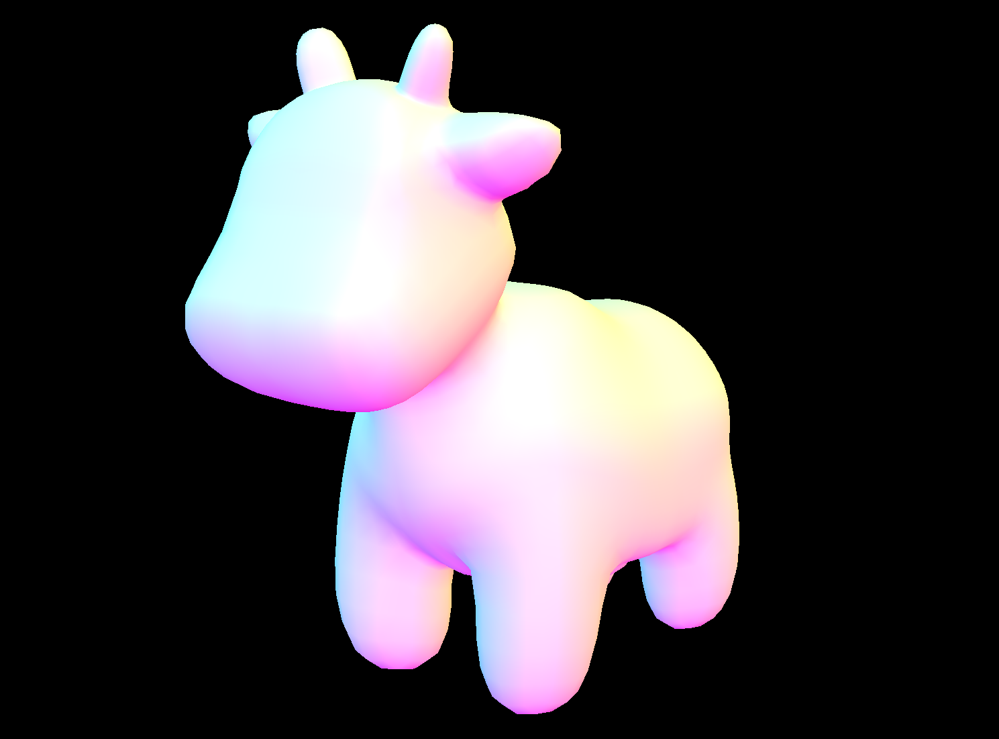
|
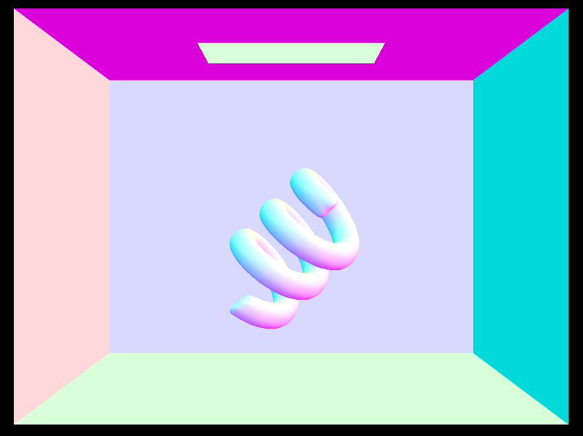
|
Now that we can quickly render meshes, even scenes with complicated geometry, we get even more realistic images by shading them! This is done by first getting the BSDF, which the primitive's reflectance divided by PI. We divide by PI to account for the cosine factor when integrating over a hemisphere. This allows us to shade an object with a diffuse/lambertian material which makes the mesh look matte.
To have these materials show up, we begin by simulating direct lighting, which is the light that comes from the source
and onto the object. Direct lighting will gives us effects like area light shadows and ambient occlusion. The first method
we implement for direct lighting is uniform hemisphere sampling which estimates
the amount of direct light by uniformly sampling over a hemisphere surrounding a point. For each sample, we get
a sample wi in object space which we then transform to world coordinates, wi_world. The pdf I
calculated to be 1/2PI. We then create a new ray and a new intersect struct. The new ray's origin is the hit point offsetted
by wi_world multiplied by the constant EPS_D, and it points in the direction of wi_world.
If the ray intersects the scene, then we get the intersected material's emitted radiance using intersect.bsdf->get_emission().
However, what we want is the material's irradiance, so to properly convert radiance to irradiance, we must multiply by the BSDF
isect.bsdf->f(w_out, wi) and cos_theta(wi) and then divide by the pdf. Finally, we accumulate all
the irradiances and average them out by dividing by the number of samples. The first column down belows shows the uniform
hemisphere sampling for the bunny and spheres.
Notice how the uniform hemisphere sampling images are a lot noisier than the images in the second column. The noice can be
reduced to get better images using the second method we will implement known as importance sampling. Importance sampling
samples each light in a scene directly rather than uniformly sample over a hemisphere.
For each light in a scene, we first check if it is a delta light. If it is, all samples would be the same so we would just need
to take 1 sample, otherwise we take ns_area_light sample. Then for each sample, we get the incoming radiance by
calling s->sample_L which also gives us the direction from hit_p to the light source, wi, the
distance from hit_p to the light source, and the pdf evaluated at wi. We then convert to object space to get w_in
because wi returned by sample_L is in world space. Now as long as w_in.z and the pdf are
greater than 0, we create a new shadow ray and new intersection, similar to the uniform hemisphere sampling implementation.
The new ray's origin is the hit point offsetted by wi multiplied by EPS_D and points in the direction
of wi. We set the new ray's max_t=distToLight to prevent us from checking for intersections behind the
light source. If the ray does not intersect the scene, we convert the radiance analogous to how we did it in uniform hemisphere
sampling. Finally, we accumulate all the irradiances for this light and average them out by dividing by the number of samples.
The results are images with a lot less noise!
|
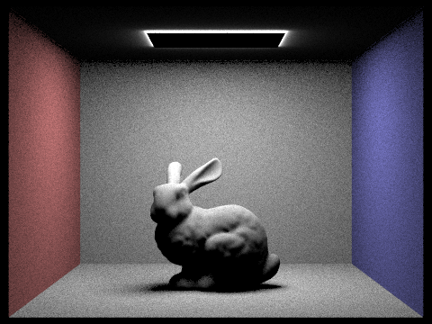
|
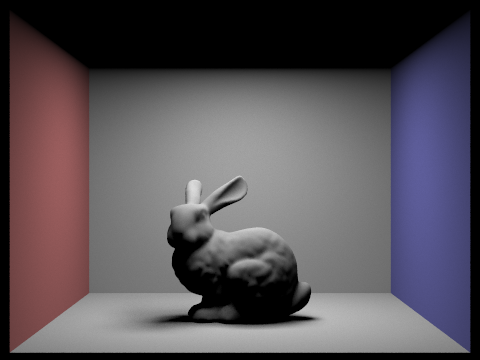
|
|
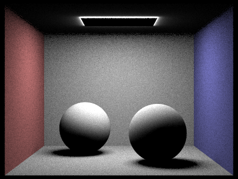
|
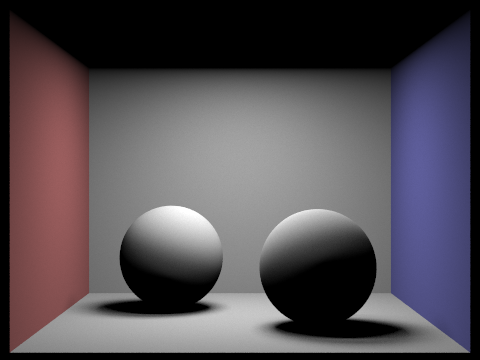
|
Here is the bunny rendered with 1, 4, 16, and 64 light rays, 1 sample per pixel, and importance sampling. As the number of light rays increase, the more we sample and the less noise we get in the image. The shadows also get more defined and soften as we increase the rays and sampling.
|
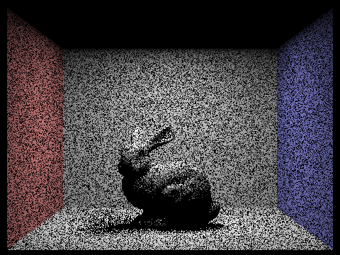
|
|
|
|
|
As we already seen, uniform hemisphere sampling creates noisier images than importance sampling because we are sampling less in uniform hemisphere sampling. The random samples taken in the half-circle around a point may not intersect with the scene which will lead to gaps in our image. That is not to say importance sampling will always give us clear images. Sampling only 1 or 4 lights will still lead to noisy results. This is because a shadow ray may intersect with a primitive, and thus create gaps in like images shown in the above comparison.
Now that we have direct lighting, we can implement indirect lighting, which is the light coming from the reflectance.
Summing over direct lighting and indirect gives us the global illumination for a scene.
We begin by filling out zero_bounce_radiance which is just the source light, so all we have to do is return
the point's emmission by calling get_emission().
Next is one_bounce_radiance, which is just the direct lighting so we return either the uniform hemisphere
sampling or importance sampling function depending on the parameter direct_hemisphere_sample.
The trickiest part is implementing at_least_one_bounce_radiance which at a higher level recursively sums up
the direct illumination of a ray depending on how many bounces there are. We begin by instantiating L_out to
be a call to one_bounce_radiance because we need at least one bounce. Then we calculate w_in and
the pdf using the BSDF's sample_f() function as well as the continuation probability, p, which I set to be 0.6.
Here if pdf<=0 or r.depth==1, we can shortcircuit and return L_out. This also serves as
our base case when we recurse.
Next if max_ray_depth>1, we want to guarantee that there will be at least one more bounce which we can achieve by
adding the condition r.depth==max_ray_depth. After this bounce, we determine if we want to continue tracing the ray
using Russian roulette in which we used the function, coin_flip(p). If the flip is true and r.depth>1,
we can continue tracing our ray.
Should the above criteria be met, we then create a new ray with its origin at the hit point offsetted by
EPS_D*wi in the direction of wi as well as a new intersection. We also make sure set the
newray.depth=ray.depth-1 to prevent infinite recursion. If the new ray intersects the scene, we recursively
trace this ray by calling at_least_one_bounce_radiance to approximate the incoming radiance for the higher bounces. We then
convert the incoming radiance to outgoing radiance by multiplying by the BSDF and cosine factor then dividing by the pdf and
continuation probability. If max_ray_depth>1 and this is our guaranteed bounce, then we can set p=1 and
just divide by the pdf. Finally, we accumulate the outgoing radiance in L_out.
|
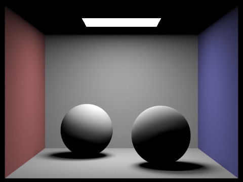
|
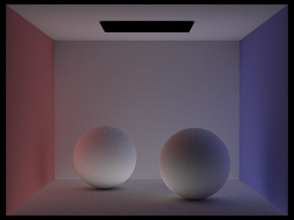
|

|
max_ray_depth
Here is the bunny with various depths. At depth=0 no rays are being cast, so all that is at
work is zero_bounce_radiance. At depth=1, we cast one ray, which is essentially
a call to one_bounce_radiance. As the depth increases, the brighter the image gets because of
the more rays we cast out and the more radiances we accumulate from the higher bounces.
|
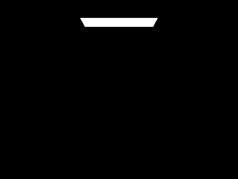
|
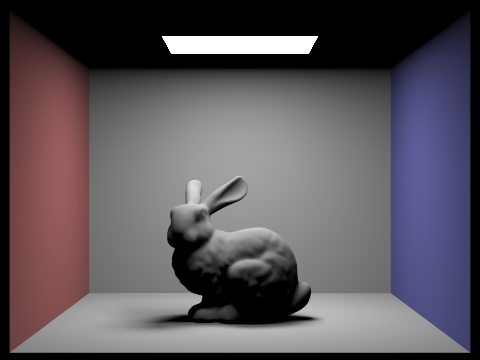
|
|
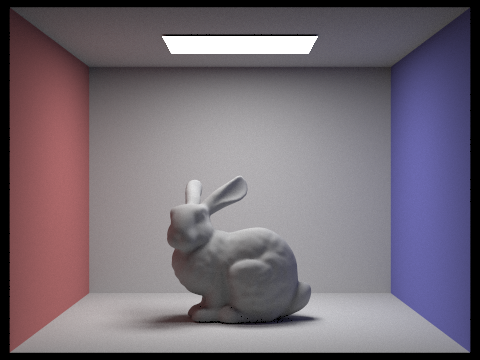
|
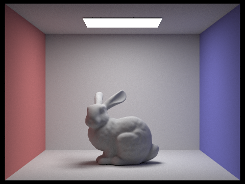
|
Here is CBspheres_lambertian with various samples-per-pixel rates using 4 light rays. With the Russian roulette probability, images at low sample rates can fall victim to early termination and as a result we get a very noisy image. As the samples increase, the noise reduces and we can render a clearer image.
|
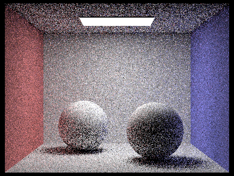
|
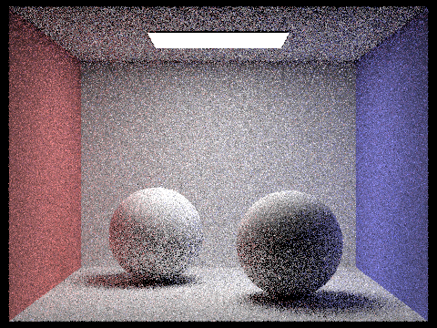
|
|
|
|
|
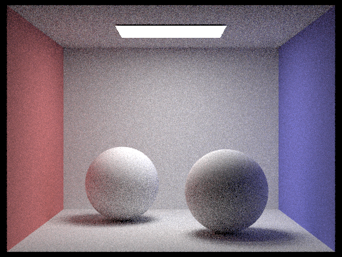
|
|

Up to this point we have been using Monte Carlo pathtracing which can generate realistic images, but the results can
also display a lot of noise. Adaptive sampling determines if a pixel converges with low sampling rates, thus generating
images with less noise without uniformly taking a high number of samples per pixel.
To implement adaptive sampling, I had to modify my raytrace_pixel method. First, I kept track of the actual number
of samples taken and stored that value in the variable n. Then for every samplesPerBatch samples, since
it is expensive to check every single pixel for convergence, I calculate the mean and standard deviation (sqrt(variance)):
where s1 and s2 are the sum and squared sums, respectively, of every sample's illuminance
taken so far:
Once we have the mean and standard deviation, we can measure the pixel's convergence using the following formula:
If I<=maxTolerance*mean where maxTolerance=0.05 by default, then we break out of the for loop and
stop sampling. Since there is the possibility of early termination, instead of dividing all the spectrums by ns_aa,
we divide by the actual number of samples we took, which I counted to be n.
Below is the sampling rate and the noise-free render of the bunny rendered at 2048 samples-per-pixel, 1 sample per light,
and max_ray_depth=5. Here, the sampling rate is higher where there is less illumination and more detail.
|
|
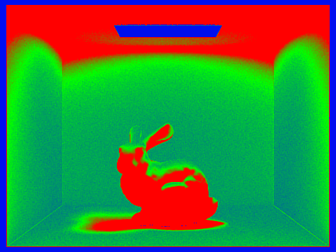
|